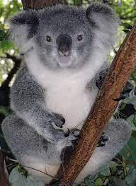

Малая панда

Ма́лая па́нда, коша́чий медве́дь или кра́сная па́нда (лат. Ailurus fulgens) — млекопитающее из семейства пандовых, подотряда псообразных, отряда хищных, которое, тем не менее, питается преимущественно растительностью; размером примерно соответствует крупным особям домашней кошки.
лина тела примерно: 51—64 см, хвоста 28—48 см. Самцы весят около 3,7—6,2 кг, самки — 4,2—6,0 кг. Туловище удлинённое, хвост пушистый, голова широкая, с короткой острой мордочкой и маленькими округлыми ушками. Имеет 38 зубов. Лапы короткие, крепкие, с полувтяжными когтями, которые помогают панде легко забираться на деревья и спускаться с них. Малые панды, как и большие, имеют на передних лапах «шестой (большой) палец», отстоящий от пяти обычных. На самом деле это ложный палец, который представляет собой видоизменённую сесамовидную кость запястья. Такая анатомическая особенность позволяет животному ловко лазать по веткам и легко управляться даже с тонкими побегами бамбука. Ученые из Института генетики и биологии развития Китайской академии наук при содействии коллег из британского Института Сенгера провели исследование и пришли к выводу, что хотя большая и малая панды имеют весьма отдаленного общего предка, жившего свыше 40 млн лет назад, «шестой палец» не унаследован ими от него, а появился значительно позднее. Каждый из этих двух видов, относящихся к разным семействам, независимо от другого обрел описанное дополнение в ходе конвергентной эволюции: бамбуковая диета и потребность в удержании бамбуковых стеблей и стали, по предположению исследователей, причинами, в силу которых закрепились генетические изменения, отразившиеся в общих анатомических чертах малой и большой панды. Мех малой панды сверху рыжего или орехового цвета, снизу тёмный, рыжевато-коричневый или чёрный. У волос на спине жёлтые кончики. Лапы глянцевито-чёрные, хвост рыжий, с малозаметными более светлыми узкими кольцами, голова светлая, причём края ушей и мордочка почти белые, а около глаз рисунок в виде маски, как у енотов, причём этот рисунок уникален для каждой отдельной особи. Это чудесный камуфляж для животного, проводящего бо́льшую часть времени на деревьях, покрытых мхами и лишайниками.
- Панда
- Куала 